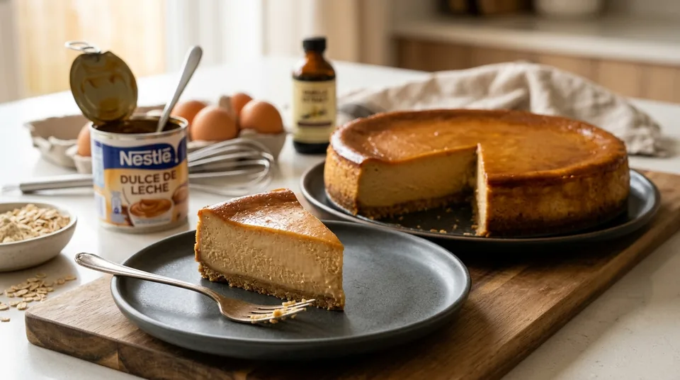
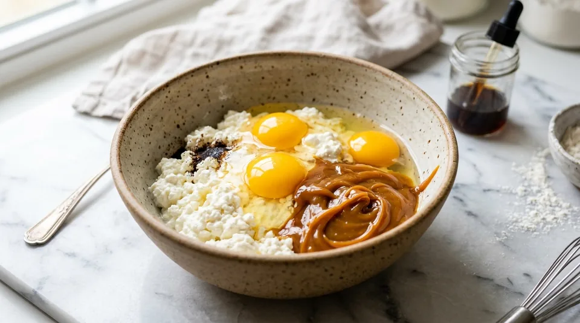
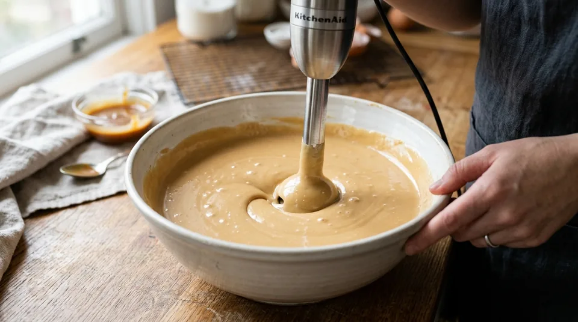
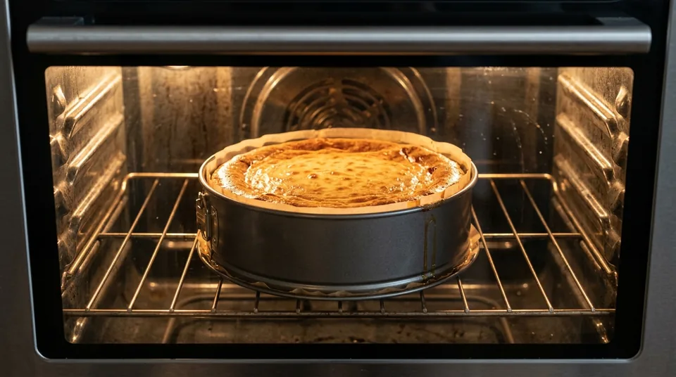

Десерты · 40–45 минут
Карамельный чизкейк (1 кг)
Высокий, плотный и шелковистый белковый чизкейк весом 1 кг на брикетном твороге 0% и легкой сгущенке. Без муки и масла. От 137 до 153 г чистого белка на весь замес!
К ингредиентам
Ингредиенты · 4 порций
- Творог «Красная цена» обезжиренный 0% — 540 г (3 пачки по 180 г)
- Яйца куриные С0 (крупные) — 4 шт (~240 г без скорлупы)
- Вареная сгущенка 4% — 220 г (~0.6 банки)
- Ванилин — 1 пакетик (1–1.5 г)
- Заменитель сахара (ФитПарад) — 1–2 стика (по вкусу)
Пищевая ценность
На 100 г: 143.5 ккал · Б 13.7 г · Ж 3.9 г · У 13.4 г
Шаг за шагом
Подготовка и соединение ингредиентов
В глубокую миску или чашу для взбивания выложите 3 пачки творога «Красная цена» 0% (540 г), разбейте 4 крупных яйца С0, отмерьте на кухонных весах ровно 220 г вареной сгущенки 4%, всыпьте 1 пакетик ванилина и 1–2 стика ФитПарада для десертной сладости.

Взбивание блендером (секрет шелковистости)
Творог «Красная цена» плотный и брикетный, поэтому вилкой или венчиком его не размешать. Погружным блендером тщательно пробивайте массу 2–3 минуты круговыми движениями, пока крупинки творога и густая варенка не превратятся в абсолютно гладкий, глянцевый карамельный крем цвета вареного сгущенного молока.

Подготовка формы (16–18 см)
Для такого объема (1 кг массы) идеальна форма диаметром 16–18 см — чизкейк получится высоким и красивым. Если используете металлическую разъемную форму, застелите дно пергаментом, а бортики смажьте каплей масла. Если форма силиконовая — можно выливать крем сразу.
Выпекание (в духовке или аэрогриле)
В духовке: разогрейте духовку до 175–180°C. Выпекайте на среднем уровне 40–45 минут. Верх схватится и красиво подрумянится, а серединка при покачивании формы может слегка подрагивать (это нормально для нежного творожного суфле).
В аэрогриле: выпекайте при 160°C ровно 35 минут. За это время верхушка равномерно схватится и приобретет аппетитную золотистую корочку.

Охлаждение и стабилизация в холоде
Не нарезайте чизкейк горячим! Дайте ему остыть прямо в форме при комнатной температуре около 1 часа, затем уберите в холодильник минимум на 2–3 часа (а лучше на ночь). Молочный и яичный белок стабилизируются, текстура станет плотной, монолитной и тающей во рту, как настоящее крем-брюле.
Другие варианты
Сливочный пломбир (светлая сгущенка 1%)
- Творог «Красная цена» обезжиренный 0% — 540 г (3 пачки по 180 г)
- Яйца куриные С0 (крупные) — 4 шт (~240 г без скорлупы)
- Сгущенное молоко светлое 1% — 220 г (~0.6 банки)
- Ванилин — 1 пакетик (1–1.5 г)
- Заменитель сахара (ФитПарад) — 1–2 стика (по вкусу)
Шоколадный пломбир (какао + эспрессо + сгущенка 1%)
- Творог «Красная цена» обезжиренный 0% — 540 г (3 пачки по 180 г)
- Яйца куриные С0 (крупные) — 4 шт (~240 г без скорлупы)
- Сгущенное молоко светлое 1% — 220 г (~0.6 банки)
- Какао-порошок («Золотой Ярлык») — 30 г (2 ст. л. с горкой)
- Крепкий эспрессо из кофемашины — 30 мл (1 короткий шот)
- Заменитель сахара (ФитПарад) — 3–4 стика (по вкусу)
- Ванилин — 1 пакетик (1–1.5 г)
- Соль мелкая — 1 щепотка (усилитель шоколадного вкуса)